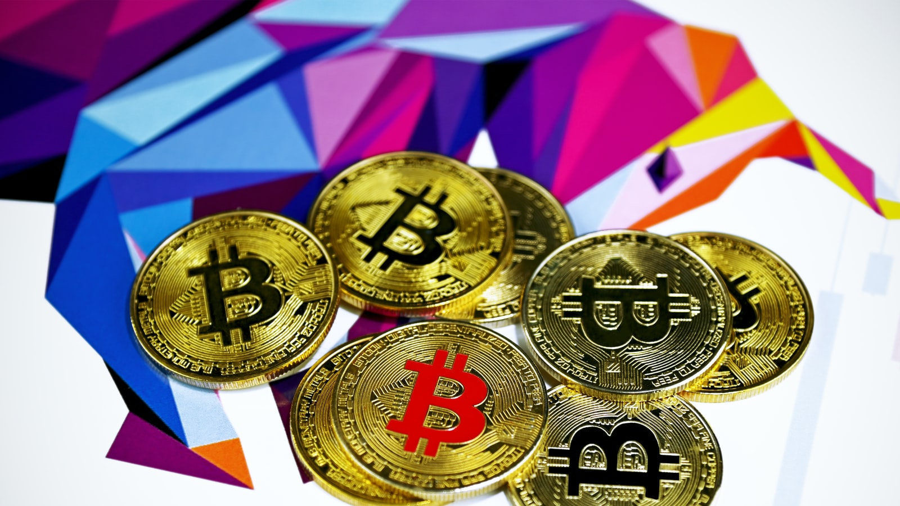

क्रिप्टोकर्रेंसी
अगले कुछ मिनटों में हम क्रिप्टोकर्रेंसी के बारे में जानेंगे -
क्रिप्टोकरेंसी क्या है?
इस तेजी से आगे बढ़ते डिजिटल वर्ल्ड में करेंसी ने भी डिजिटल रूप ले लिया है , और इस डिजिटल करेंसी को ही क्रिप्टो करेंसी कहा जाता है जैसे की बिटकॉइन। जिसका नाम अपने बहुत बार सुना है, लेकिन ये क्रिप्टो करेंसी क्या है?,इसे कैसे इस्तेमाल किया जाता वो जानेंगे आज इस ब्लॉग में।
क्रिप्टो करेंसी एक वर्चुअल करेंसी है। जिसकी पहचान 2009 में कराइ गई थी। पहली क्रिप्टो करेंसी सबसे ज्यादा चहीती बिटकॉइन ही थी। क्रिप्टो करेंसी कोई असली सिक्को या नॉट की तरह नहीं होती मतलब हम इसे हाथ में नहीं ले सकते। लेकिन ये हमारे डिजिटल वॉलेट में सेव रहती है, इसीलिए आप इसे ऑनलाइन करेंसी भी कह सकते है। क्युकी यह केवल ऑनलाइन सेव रहती है। इसका ट्रांसफर एक कंप्यूटर से दूसरे कंप्यूटर में होता है।इसमें ब्लॉक चैन टेक्नोलॉजी का इस्तेमाल किया जाता है।क्रिप्टो करेंसी पर किसीका नियंत्रण होता है?
नहीं , क्रिप्टो करेंसी पर किसी सरकार या कोई बैंक या संस्था का नियंत्रण नहीं होता। हालांकि, बाकि सभी करेंसी पे किसी संस्था या सरकार का नियंत्रण होता है। क्रिप्टो करेंसी जैसी वर्चुअल करेंसी पर किसी देश या संस्था का नियंत्रण नहीं होता है। यानि क्रिप्टो करेंसी पुराणी बैंकिंग प्रथा के हिसाब से काम नहीं करती बल्कि यह एक कंप्यूटर वॉलेट से दूसरे कंप्यूटर वॉलेट पर ट्रांसफर होता रहता है। ऐसी 5000 से भी ज्यादा क्रिप्टो करेंसी अभी मौजूद है। और कुछ चहीती क्रिप्टो कर्रेंसीज़ है - एथेरियम , रिप्पल , लाइट कॉइन , टेथर और लिब्रा।
इनमे आप इन्वेस्ट कर सकते है और बिटकॉइन की तरह ही इन्हे भी खरीद और बेच सकते है। सबसे ज्यादा चहीती करेंसी फ़िलहाल बिटकॉइन ही है। और आप इसका अंदाजा इसी से लगा सकते है की बड़ी बड़ी कम्पनियोने बिटकॉइन के ट्रांसेक्शन को स्वीकार कर लिया है।
और आगे ऐसी कम्पनिया बढ़ती जा रही है। ऐसे में बिटकॉइन का उपयोग आप ट्रेडिंग , ट्रैवेलिंग या कोई मनी ट्रांसफर में कर सकते है।
भारत में भी अब धीरे थिरे बिटकॉइन के उपयोग का स्वीकार किया जा रहा है। भारत में इसका अभीतक ज्यादा इस्तेमाल न होने का एक कारण इसका इललीगल होना था। जिसके चलते क्रिप्टो करेंसी को RBI के द्वारा बैन किया गया था , जिसको सुप्रीम कोर्ट ने मार्च २०२० में हटा दिया है। यानि अब भारत में क्रिप्टो करेंसी का उपयोग करना लीगल हो गया है। इसीलिए भारत में भी क्रिप्टो यूज़र्स की संख्या बढ़ने लगी है।

भारत में क्रिप्टो करेंसी का ज्यादा पॉपुलर न होने का दूसरा कारण -
भारत में क्रिप्टो का ज्यादा पॉपुलर न होने का दूसरा कारण यह है की हम यह मानते है इंवेस्टनेंट करना हो तो FD , म्यूच्यूअल फण्ड , शेयर्स और गोल्ड में ही करना चाहिए। जो गलत तो नहीं है लेकिन नए ज़माने में हमें नै चीजों में भी इन्वेस्ट करना चाहिए।
क्रिप्टो करेंसी के फायदे -
इसमें आप आसानी से और जल्दी पैसे ट्रांसेक्शन कर सकते है।
इससे इंटरनेशनल ट्रांसेक्शन आसानीसे चुटकियो में किये जा सकते है।
आपको इसमें कोई ट्रांसेक्शन फीस भी देनी नहीं होती।
इसमें कोई मिडिल मैन भी नहीं होता जिससे ट्रांसेक्शन सिक्योर और सेफ होते है।
फेसबुक, पेपैल, अमेज़न और वॉलमार्ट जैसी बड़ी-बड़ी कम्पनीज क्रिप्टो करेंसी से जुडी हुई है।
और तो और एलोन मस्क जो आज दुनिया के सबसे अमीर इंसान है वो भी इसमें इन्वेस्ट करते है।
USA , चीन , जापान , स्पेन और रोमेनिया जैसे देशो में इसके यूज़र्स ज्यादा है।
यह सब जानने के बाद अब आपको भी इसमें इन्वेस्ट करने का मन हो गया होगा। तो हम बता दे आपको किसी भी करेंसी में उसपे बिना देखे इन्वेस्ट नहीं करना हे हो सके तो उसका लास्ट वीक का चार्ट चेक करे और जिस करेंसी में आप इन्वेस्ट करना चाहते है उस पर पहले थोड़ी रिसर्च करे। यह इसलिए करना जरुरी है क्युकी इसमें बहुत रिस्क भी होता है। आप जब थोड़ी रिसर्च करके इन्वेस्ट करते है तो रिस्क के चांस कम हो जाते है।
